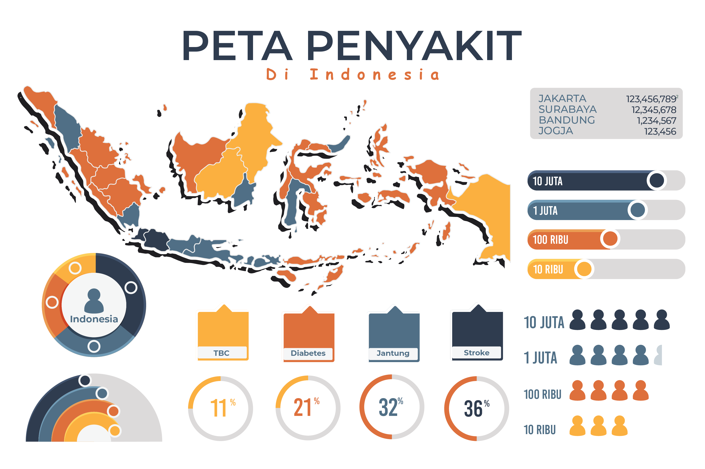

Data Kasus Mematikan Di Indonesia
Lebih dari 50 persen kematian di Indonesia disebabkan oleh penyakit yang menyerang organ vital manusia. Stroke menjadi penyakit paling mematikan, lebih dari 20 persen kematian disebabkan oleh penyakit ini.
sebagai salah satu gangguan yang menyerang organ vital, stroke merupakan penyakit yang tidak bisa disepelekan. Penyakit ini menjadi penyebab kematian terbesar di Indonesia. Merujuk data World Life Expectancy, tidak kurang dari 23 persen kematian di Indonesia disebabkan oleh stroke. Angka ini menempatkan Indonesia menjadi negara dengan kematian akibat stroke tertinggi di dunia.

Selain stroke, penyakit lain yang tidak kalah mematikan adalah jantung koroner. Penyakit ini menempati urutan kedua dengan catatan kematian hampir 10 persen dari total kematian di Indonesia. Kedua penyakit ini termasuk dalam kelompok penyakit kardiovaskuler, yaitu penyakit yang disebabkan gangguan fungsi jantung dan pembuluh darah.
Berdasarkan data Kementerian Kesehatan, setiap tahunnya lebih 17,3 juta kematian disebabkan oleh penyakit kardiovaskuler, terutama penyakit jantung koroner dan stroke. Jika melihat tren saat ini, diperkirakan akan terus meningkat hingga mencapai 23,3 juta kematian pada tahun 2030.
Selanjutnya penyakit diabetes mellitus, influenza dan pneumonia, tuberkulosis, liver, dan paru-paru juga termasuk dalam daftar penyakit mematikan. Bersama stroke dan jantung koroner, tujuh penyakit tersebut menjadi penyebab lebih dari 58 persen kematian di Indonesia.
Stroke terjadi ketika pembuluh darah yang secara alamiah bertugas membawa oksigen dan juga nutrisi ke otak, justru terhalang oleh adanya penggumpalan darah atau bahkan pecahnya pembuluh darah. Hal ini berakibat pada beberapa bagian jaringan otak kekurangan asupan oksigen, sehingga menjadikan sel atau jaringan tersebut tidak bekerja (mati). Karena itu, tidak mengherankan, jika orang yang memiliki penyakit darah tinggi, obesitas dengan banyak lemak yang menempel di pembuluh darah serta kolesterol kemungkinan mengalami penyakit komplikasi stroke.
Secara umum, menurut data Riset Kesehatan Dasar 2013, prevalensi stroke di Indonesia 12,1 persen. Artinya, ada 12,1 persen orang Indonesia yang tercatat menderita stroke. Angka itu naik dibandingkan tahun 2007 yang hanya sebesar 8,3 persen.

Penderita penyakit stroke banyak ditemukan pada kelompok usia tua. Namun demikian, berdasarkan diagnosis/gejala, penyakit jantung koroner, gagal jantung dan stroke cukup banyak pula ditemukan pada kelompok usia muda, bahkan pada rentang 15-24 tahun.
Prevalensi terbesar penyakit ini dialami oleh kelompok usia 75 tahun ke atas. Lebih dari 43 persen penduduk Indonesia di usia ini, tercatat menderita stroke. Bahkan, terdapat 67 persen yang mengalami gejala stroke. Usia 45-54 merupakan usia rentan terkena penyakit ini, lebih dari 10 persen usia ini terdiagnosis stroke. Sedangkan untuk kelompok usia di bawah itu, prevalensi penyakit stroke masih berada di bawah angka 3 persen.
Stroke bisa disebabkan oleh banyak faktor. Salah satu yang utama adalah faktor usia. Menurut data yang kami analisis, seiring dengan bertambahnya usia, risiko terkena penyakit stroke dapat meningkat hingga 4 kali lipat. Hal ini merupakan hal wajar karena berkaitan dengan proses degenerasi (penuaan) yang terjadi secara alamiah dan bersifat menurunkan efisiensi dari organ-organ tertentu dalam tubuh. Pada orang-orang lanjut usia, pembuluh darah lebih kaku karena adanya plak, dan ini menjadikan sangat berisiko terkena penyakit kardiovaskuler terutama stroke.
Lebih jauh, risiko terbesar terkena stroke adalah pada masa transisi di usia 40 tahun. Risiko terkena stroke pada kelompok usia 45-54 tahun mencapai 4,16 kali lebih besar dibanding usia 35-44. Sedangkan untuk kelompok 45-54, 55-64, sampai kelompok 75 tahun ke atas, risikonya sedikit berkurang menjadi 2-3 kali lebih besar dibanding kelompok sebelumnya.

Sementara itu, temuan lain menunjukkan bahwa laki-laki cenderung lebih banyak menderita penyakit ini. Pada 2013, prevalensi untuk kelompok laki-laki adalah 7,1 persen. Sedangkan perempuan mempunyai prevalensi sedikit lebih rendah yakni di angka 6,8 persen. Meski perbedaannya tipis, namun tetap, risiko laki-laki terkena stroke lebih besar daripada perempuan, yakni sekitar 1,04 kali lebih besar. Pola hidup sehat merupakan kunci dalam menghindari berbagai penyakit, begitu pula dengan stroke.
Pola hidup ini dapat dapat dimulai dengan melakukan berbagai aktivitas fisik yang menyehatkan, tidak malas berolahraga serta mengkonsumsi aneka makanan yang sehat untuk tubuh dan seluruh organ dalam tubuh anda. Hindari aktivitas merokok dan juga kurangi makanan cepat saji (junkfood).